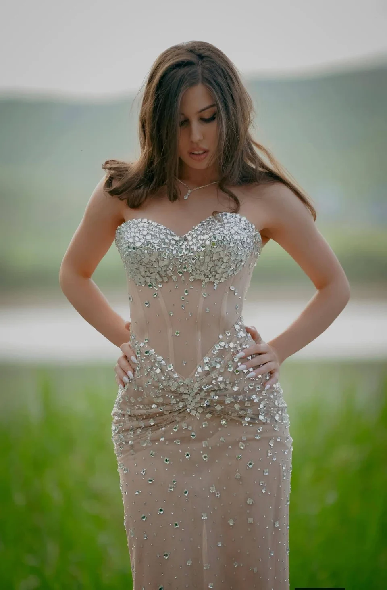
ვერცხლისფერი ბზინვარება
საღამოს
მომდგარი საღამოს კაბა მბზინავი დეკორით.
ჩვენი ნამუშევრები
აღმოაჩინეთ ჩვენი თბილისის ატელიეს ნამუშევრები: საღამოს და საქორწილო კაბები, ყოველდღიური და ტრადიციული სამოსი, საბავშვო კოსტიუმები და ჯგუფური შეკვეთები.

საღამოს
მომდგარი საღამოს კაბა მბზინავი დეკორით.
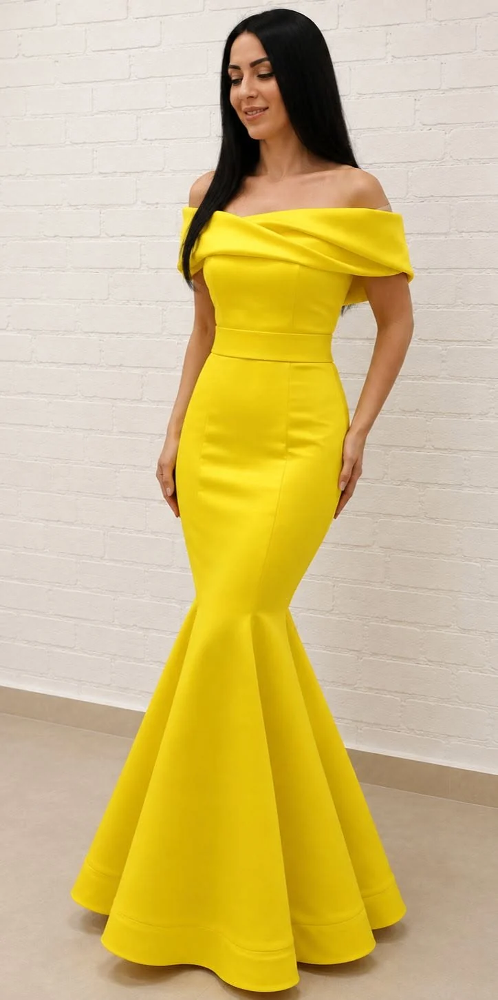
საღამოს
ყვითელი მხრებგადაწეული კაბა გაშლილი ბოლოთი.

ყოველდღიური
მუქი ლურჯი პიჯაკი და ქვედაკაბა კონტრასტული თეთრი საყელოთი.
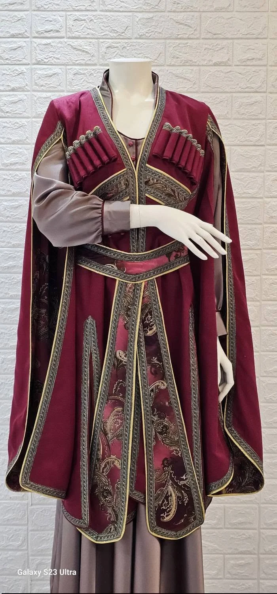
ტრადიციული
შინდისფერი და მონაცრისფრო სამოსი ორნამენტული დეტალებით.

საქორწილო
თეთრი საქორწილო კაბა გრძელი შლეიფით.

საბავშვო
ყვავილებიანი საბავშვო კაბა მოცულობითი სახელოებით.

საღამოს
ცისფერი კაბა დეკორითა და წინ შეკრული ნაკეცებით.

ყოველდღიური
მომდგარი პიჯაკისა და შარვლის კომპლექტი.

საღამოს
სპილოსძვლისფერი კაბა კისერთან შეკრული ზედა ნაწილითა და ნაკეცებიანი წელით.

საბავშვო
მუქი ლურჯი საბავშვო კაბა კრემისფერი საყელოთი და ბაფთით.

საღამოს
მუქი მწვანე გრძელი კაბა შლეიფით.
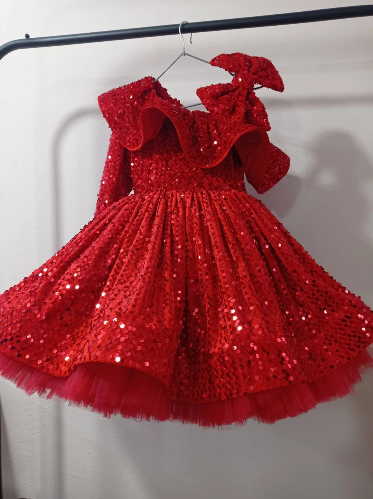
საბავშვო
წითელი საბავშვო კაბა მხრებზე ბაფთებით.
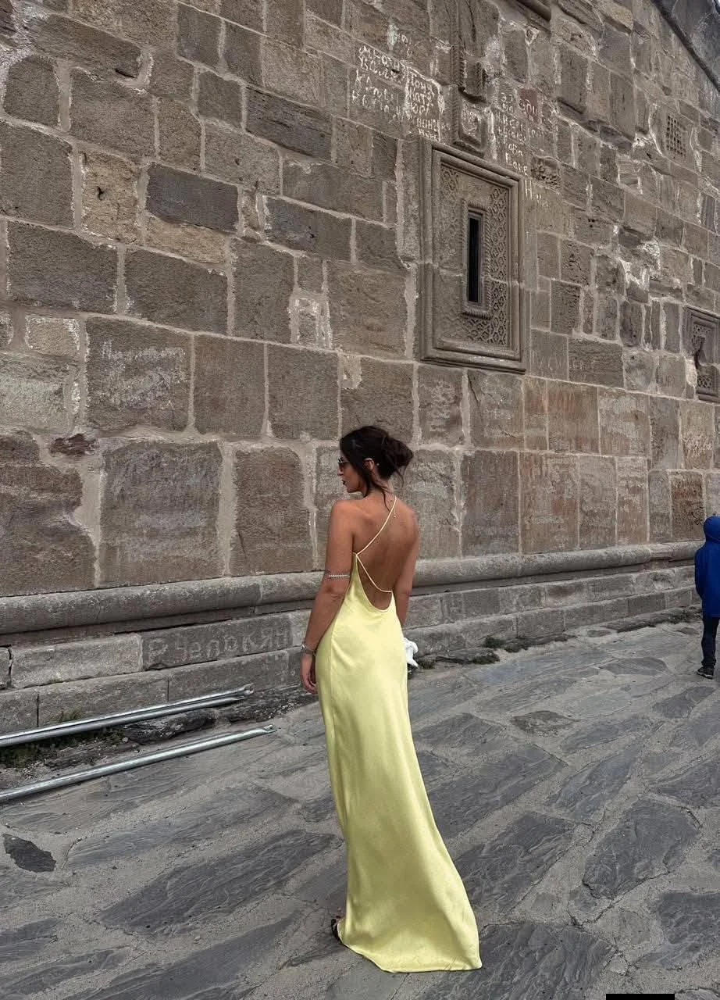
საღამოს
ღია ლაიმისფერი კაბა ღია ზურგით.
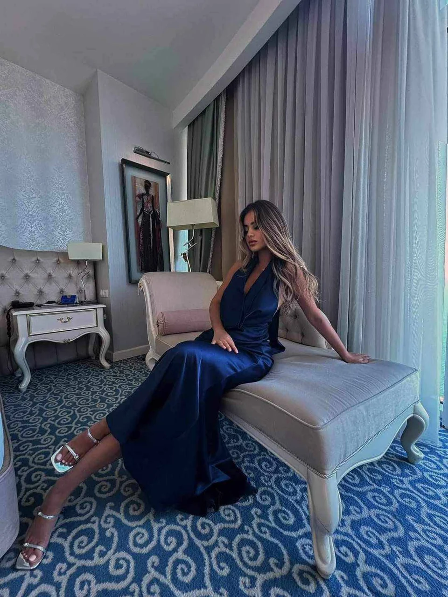
საღამოს
მუქი ლურჯი გრძელი კაბა მჯდომარე პოზაში.
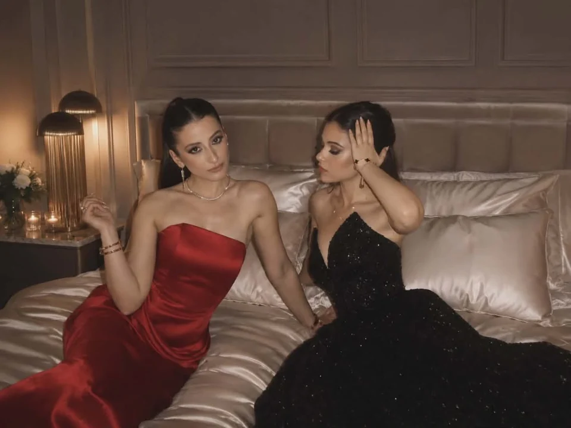
საღამოს
წითელი და შავი საღამოს კაბები ერთ კადრში.
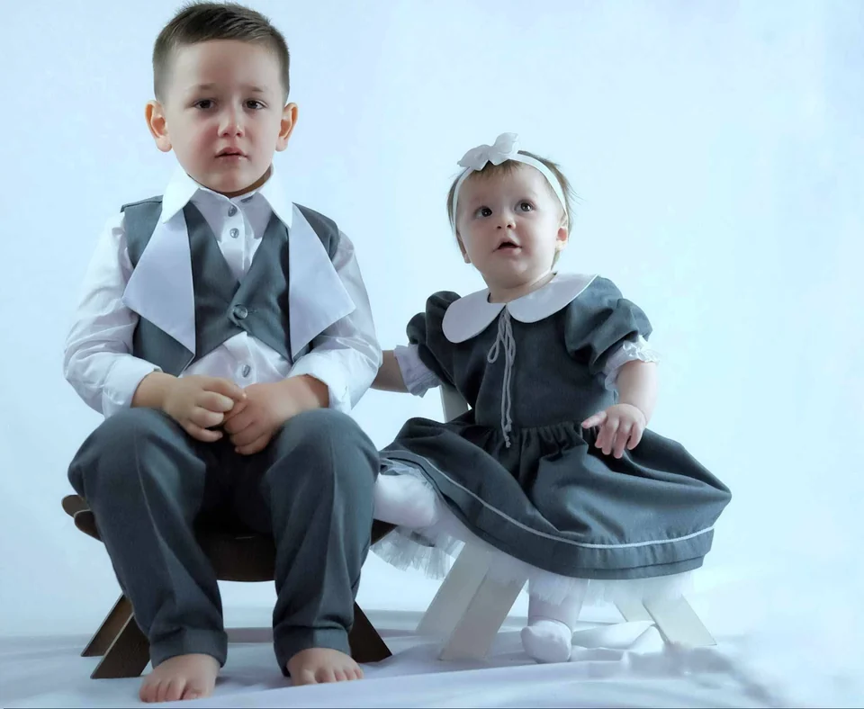
საბავშვო
ბავშვებისთვის შექმნილი ნაცრისფერი და თეთრი სადღესასწაულო კომპლექტები.
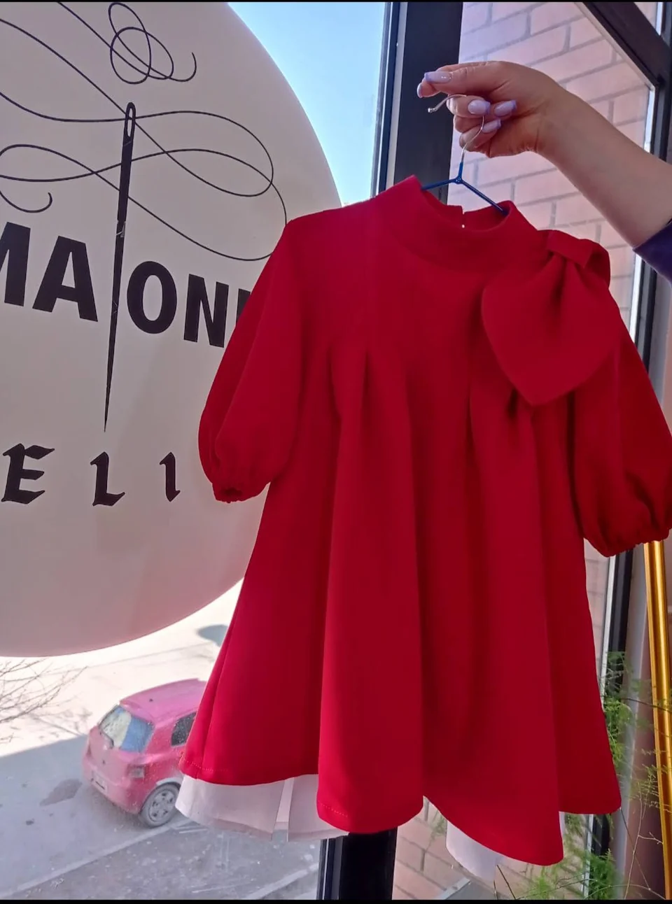
საბავშვო
წითელი გრძელმკლავიანი საბავშვო კაბა გამორჩეული ბაფთით.
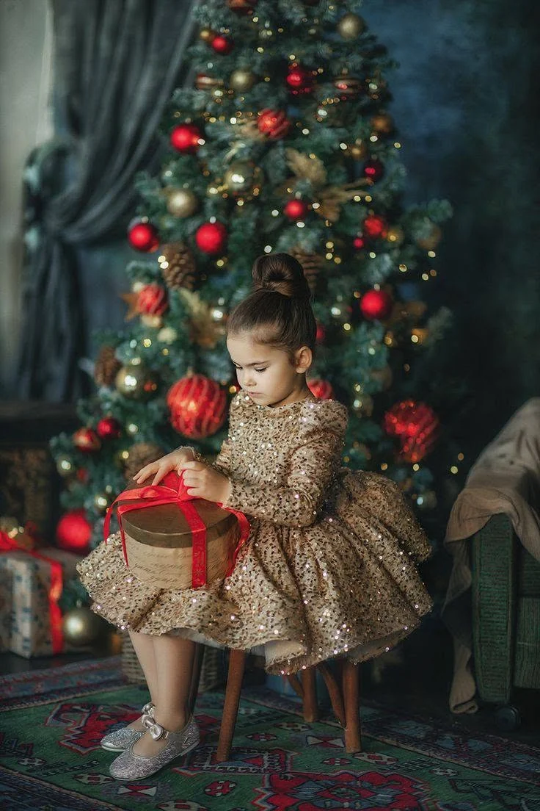
საბავშვო
ოქროსფერი ორნამენტით გაფორმებული საბავშვო სადღესასწაულო კაბა.
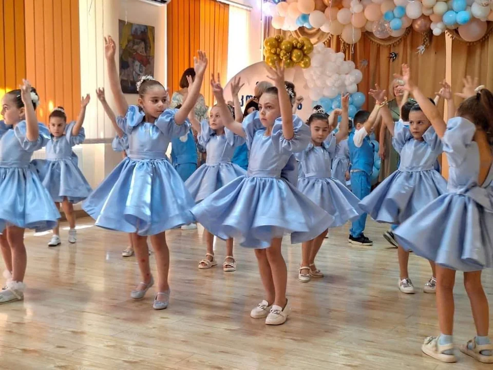
საბავშვო
ჯგუფური წარმოდგენისთვის შექმნილი ერთნაირი ცისფერი კაბები და ჟილეტიანი კომპლექტები.
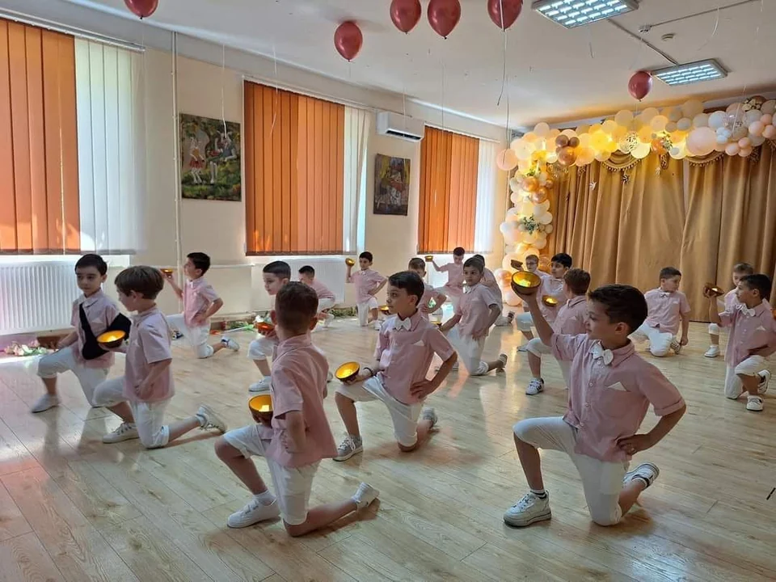
საბავშვო
ბავშვების ჯგუფისთვის შექმნილი შეხამებული ღია ვარდისფერი და თეთრი კოსტიუმები.
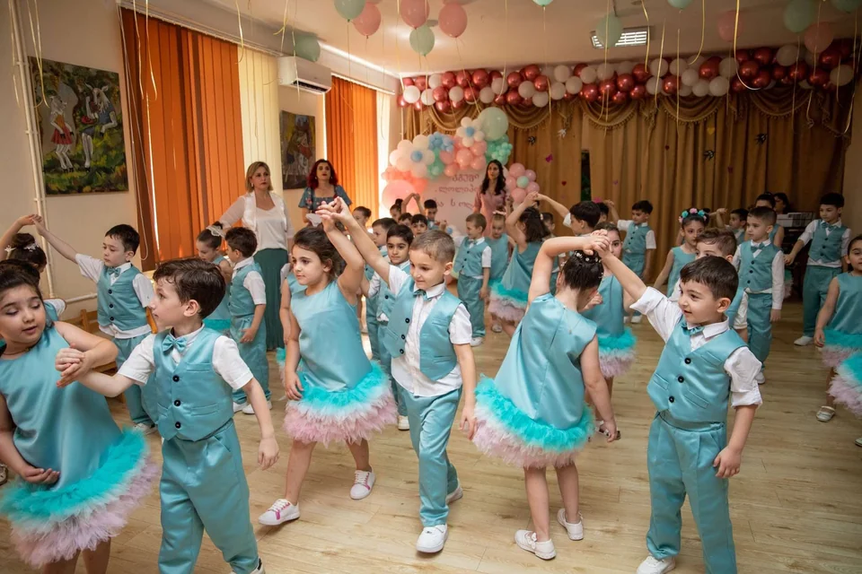
საბავშვო
ჯგუფური შეკვეთისთვის შექმნილი ფირუზისფერი კაბები და ჟილეტიანი კომპლექტები.
თქვენი იდეით დავიწყოთ
გაგვიზიარეთ თქვენი ჩანაფიქრი. შესაძლებლობებს ერთად განვიხილავთ.